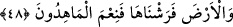

verdim, seni destekledim” mânâsıyla yardım ifâde edildiği için âyetteki “eyd”den
murad Allah’ın yardım ve desteğidir.
“Ve biz bunu yapmaya elbette kadiriz.” el-Mûsi’, takat anlamındaki vüs’ kökünden
gelmekte olup ittifakla “kadir, kudret sâhibi Allah” demektir.
Tâcu’l-mesâdır’da bu kelime “zengin olmak, tamamıyla yükseğe, kemâle erişmek”
şeklinde izah edilmektedir. “Allah seni zengin kılsın, ihtiyaçsız kılsın” mânâsı
kasdedilir.
Allah’ın, göğün hâricinde de her şeye gücünün yettiğini ifâde etmek için ilâve olarak
getirilmiş bir tekit cümlesidir. Yine bu cümle ile “Allah’ın genişletme eylemini
sürdürdüğü” veya “yerle gök arasını genişlettiği” yâhut da “Gökte rızkınız da var”
(Zâriyât 51/22) âyetinde buyrulduğu üzere “mahlûkatın rızkını artırdığı” anlamlarının
kasdedilmiş olması da mümkündür. Ayrıca bu genişletme sebebiyle, evin geniş ve rızkın
bol olmasının, Allah’ın el-Vâsi/genişleten ism-i şerifinin tecellîsinden kaynaklandığına
işâret edilmektedir.
48. Yeri de döşedik. (Bak) ne güzel döşeyiciyiz!
“Yeri de döşedik.” Biz onu türlü nimetlerle donattık. Biz, Kâbe’nin altından başlayıp
yaya yürüyüşüyle beş yüz yıllık bir mesafe olan yeri, canlıların, yataklarında ve
döşeklerindeki rahat hareketleri gibi onun üzerinde dengeli bir biçimde durup
dolaşabilmeleri için bir döşek ve yatak gibi yaydık. “Ne güzel döşeyiciyiz!” Yâni
“Biz” ne güzel döşeyiciyiz!
Selef âlimleri yeryüzünün durumu ve şekli husûsunda ihtilâf etmişlerdir. Bazıları onun
yaygı gibi düz bir yüzeyden oluştuğunu ve doğu, batı, güney ve kuzey olmak üzere dört
yöne sâhip bulunduğunu, bazıları onun bir sofra gibi olduğunu, diğer bazıları onun bir
davul şeklinde olduğunu ifâde etmişlerdir.
Yine, yeryüzünün kubbe şeklinde yarım küre olup gökyüzünün onun etrafını kuşattığını
iddiâ edenlerin yanı sıra onun kâse gibi ortası çukur olduğunu söyleyenler de olmuştur.
Cumhura göre ise yeryüzü top gibi yuvarlık olup, onun etrafı yumurtanın sarısının
beyazıyla kuşatılması gibi semâ ile tam bir biçimde kuşatılmıştır. Yumurtanın küçük
olan sarı kısmı yeryüzü, beyaz kısmı semâ ve dış tarafı (kabuğu) da ikinci bir semâ
mesâbesindedir. Fakat şu var ki, Allah Teâlâ bu çevrelemeyi, yumurtanın beyazının
sarısını çevrelemesi gibi yukarıya doğru uzanır bir biçimde değil de, bir topun etrafını
dönen aynı seviyedeki paralel çizgiler gibi enlemesine yaratmıştır. Öyle ki bazı
jeologlar bu hususta şöyle demişlerdir: Yerin yüzeyinde çok derin bir çukur kazılması
mümkün olsa, o çukur bizi, yeryüzünün başka bir bölgesine götürür. Meselâ Endülüs
toprağında bir delik açılmış olsa o deliğin ucu ta Çin’de çıkar.